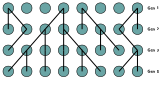
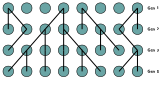
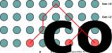
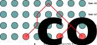

From tree priors...
- In the first lecture on Bayesian phylogenetics, we briefly mentioned the role of tree-generating models.

Probability of coalescence in generation $i-m$: $P(m)=(1-p_{\textrm{coal}})^{m-1}p_{\textrm{coal}}$
Continuous time limit (large $N$, small $g$): $P(t)=e^{-\frac{1}{Ng}t}\frac{1}{Ng}$
Question: How can this be generalized to $k$ samples?
Answer: $p_{\text{coal}}=\frac{k(k-1)}{2}\frac{1}{N}=\binom{k}{2}\frac{1}{N}$


 



 
